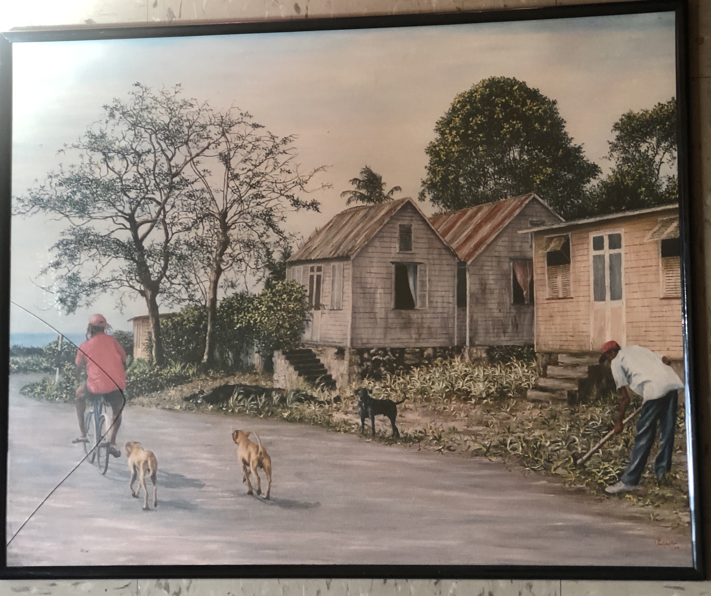
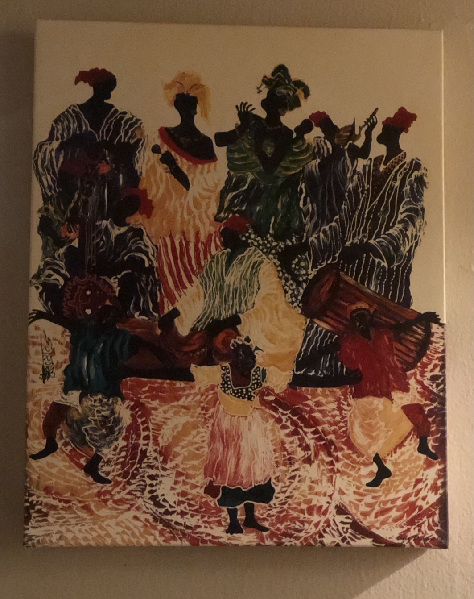
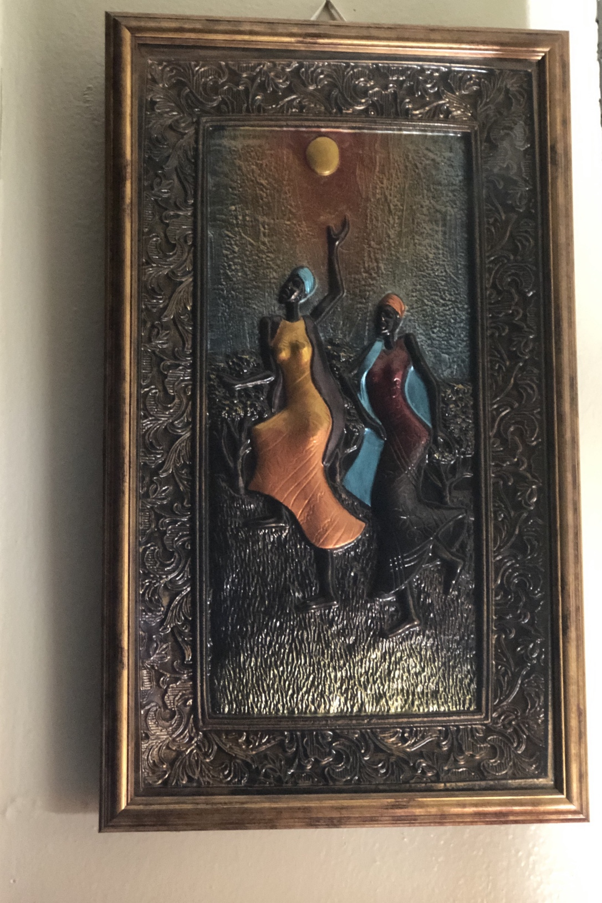

This page features cultural paintings
Countryside
This painting depicts country life in the Caribbean. It captures the atmosphere and energy of life in the countryside of Caribbean islands. In the painting there are chattel houses. Chattel houses are small moveable wooden homes found in various Caribbean countries. Chattel houses are an important part of Bajan culture and heritage. Some chattel houses in Barbados have been converted into shops and museums.
Family Night
This is a painting of a family gathering in west Africa. It captures the atmosphere and energy of west African culture. In the painting the people are dancing, singing, and playing the ‘Dun Dun’ drum.
Nightlife
